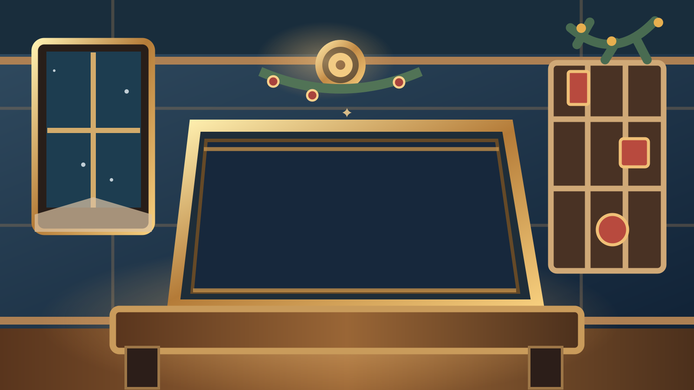

Сборка механизма · этап 1 из 3
Проверяем публикацию заданий…
Установлено деталей: 0 из 3Математика: 10–20 минут

Тик: «У часовщика остановилось Сердце мастерской. Начнём сборку!»

Тик: «У часовщика остановилось Сердце мастерской. Начнём сборку!»